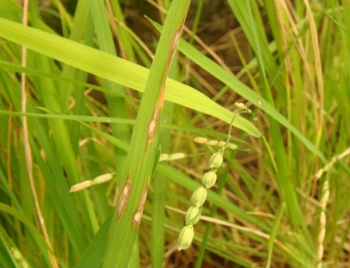

Home
RICE
FUNGAL DISEASES
1. Blast
2. Brown Spot
3. Narrow brown leaf spot
4. Sheath rot
5. Sheath blight
6. False smut
7. Udbatta disease
8. Stackburn disease
9. Stem rot
10. Foot rot or Bakanae disease
BACTERIAL DISEASES
1. Bacterial leaf blight
2. Bacterial leaf streak
VIRAL DISEASES
1. Rice Tungro Disease (RTD)
2. Rice Grassy stunt disease
3. Rice ragged stunt disease
4. Rice yellow dwarf disease
Questions
Download Notes
RICE :: INDEX :: DISEASES OF RICE
